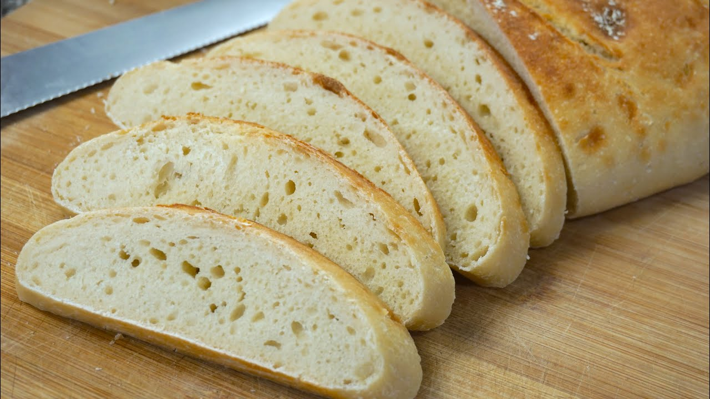
Pan Blanco
Delicioso y tradicional, ideal para acompañar tus comidas.

Delicioso y tradicional, ideal para acompañar tus comidas.
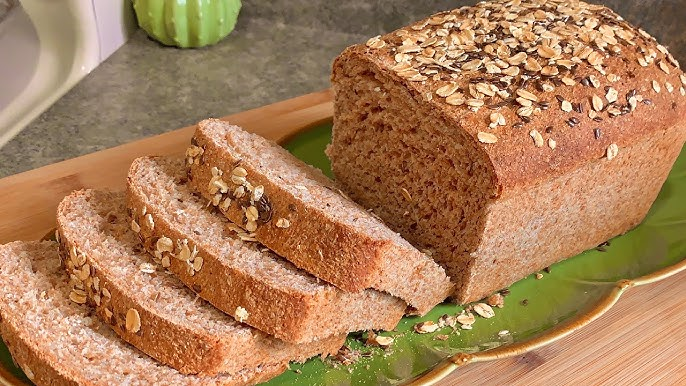
Es rico en fibra, ideal para quienes buscan una opción más saludable y completa.
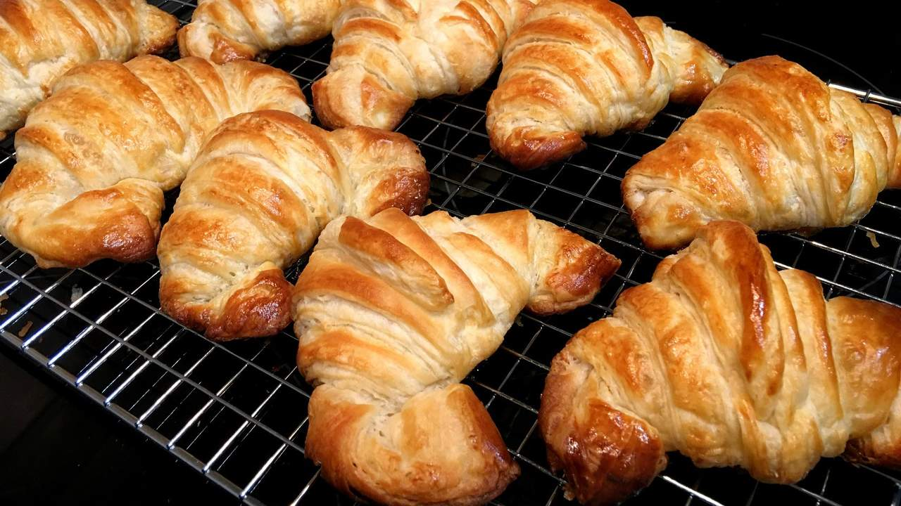
Pequeños panes suaves y ligeramente dulces, complementados con un toque de mantequilla.
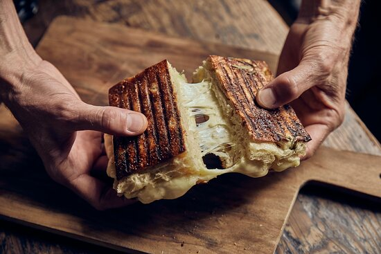
Pan redondo y suave, característico por su miga esponjosa y corteza dorada, popular en muchas partes del país.
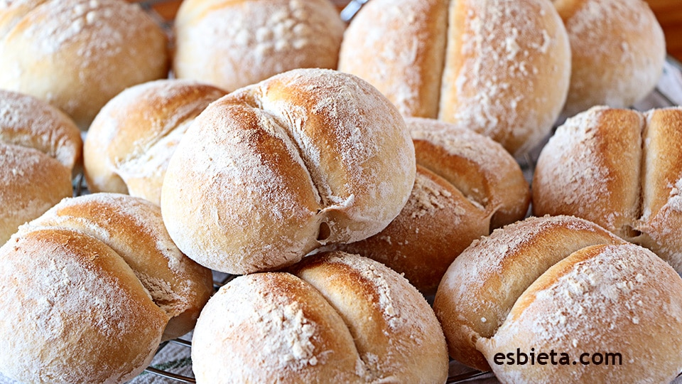
Pan crujiente por fuera y suave por dentro, comúnmente consumido en el desayuno o como acompañamiento.

Un pan pequeño y redondo relleno de queso derretido en su interior, muy popular en las mañanas.
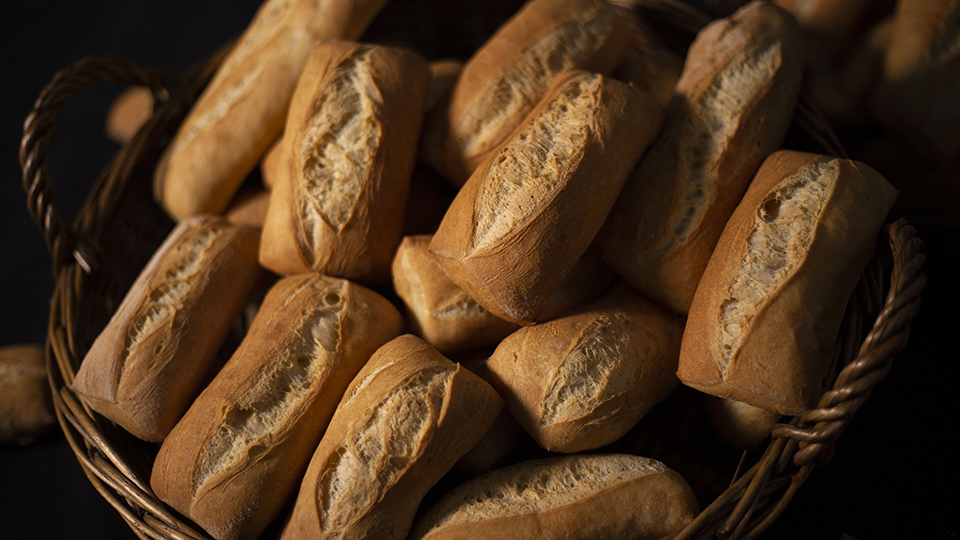
Un pan italiano de corteza crujiente y miga aireada, con grandes burbujas en su interior.
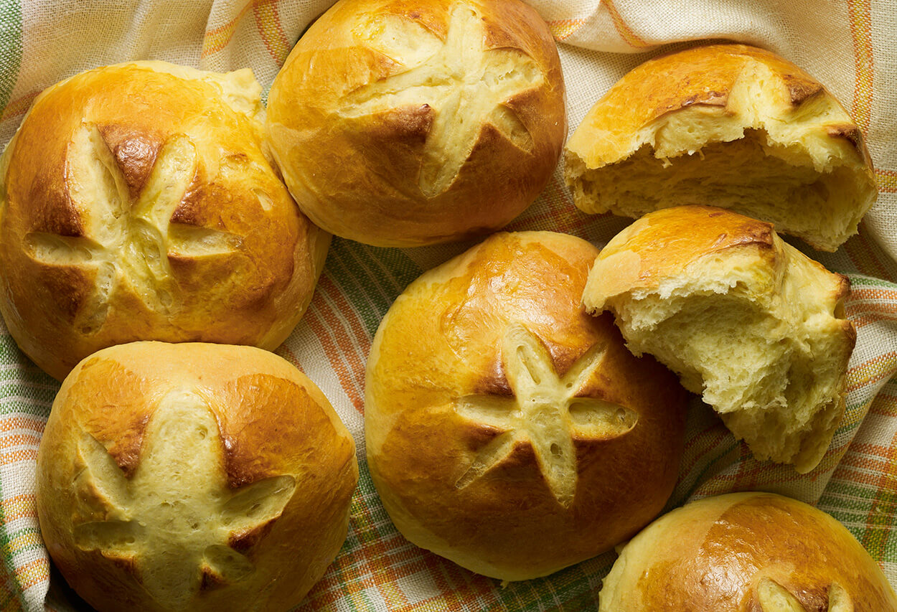
Un pan suave y ligeramente dulce, de color amarillo debido a la yema de huevo en su preparación.
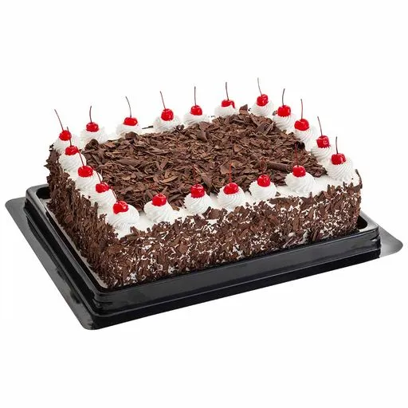
Un pastel delicioso y elegante, compuesto por capas de bizcocho de chocolate rellenas de crema batida y cerezas.
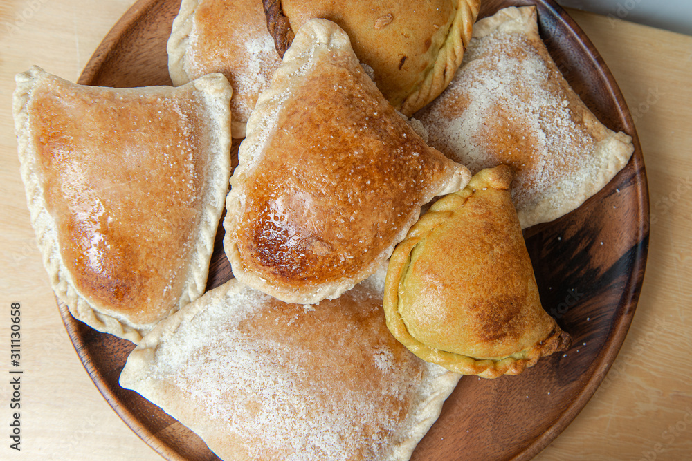
Deliciosas empanadas fritas con una masa ligera y aireada, que se infla durante la cocción, creando una textura crujiente por fuera y suave por dentro.
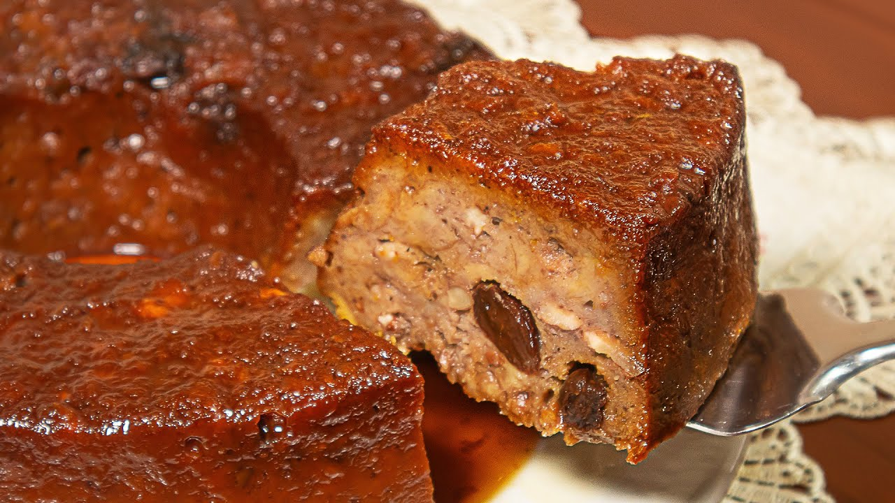
Es un dulce casero y reconfortante, con una textura suave y húmeda, que se hornea hasta obtener una capa dorada en la parte superior.
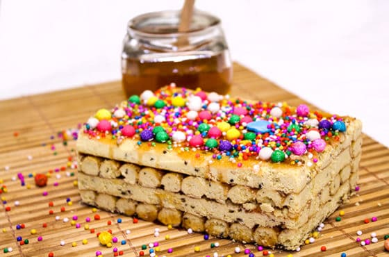
Este turrón está hecho de una masa de galletas crujientes, unidas con un almíbar espeso y decorado con colores brillantes de confites.
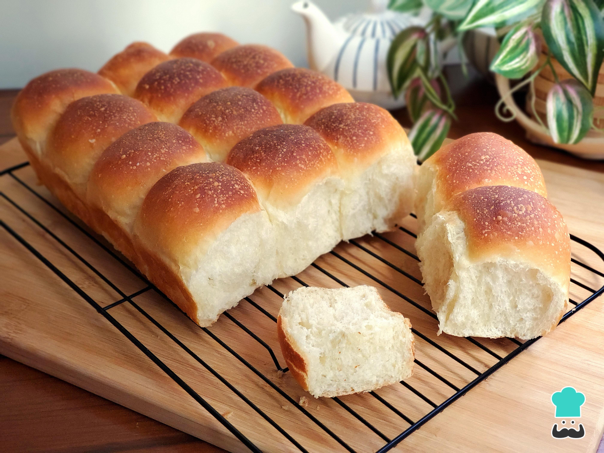
Este bizcocho se caracteriza por su textura aireada y su color dorado, ideal para acompañar un café o té en el desayuno o la merienda.
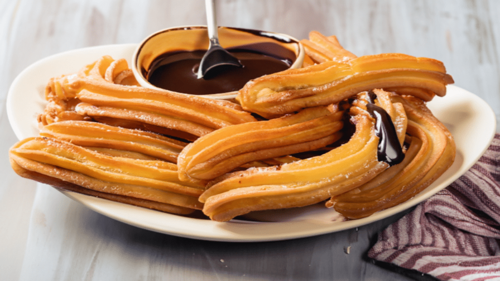
Están hechos de una masa frita, generalmente a base de harina, agua, sal y a veces azúcar, que se amasa y se fríe en forma de tiras largas y crujientes.